전자기사 (2014-09-20 기출문제)
1과목: 전기자기학
1. 내도체의 반지름이 a(m), 외도체의 내반지름이 b(m)인 동축케이블에서 도체사이의 매질의 유전율 ε(F/m), 투자율은 μ(H/m)이다. 이 케이블의 특성임피던스(Ω)는?
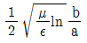
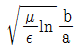
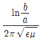
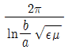
(정답률: 60%)

2. 권수 N1, N2인 두 코일이 반지름 a인 공심(空心) 동축 원 통상으로 그림과 같이 감겨져 있을 때, 코일 N1에서 코일 N2로 전달되는 상호인덕턴스 M12는? (단, 권선의 길이는 각각 ℓ1, ℓ2이고 누설자속은?
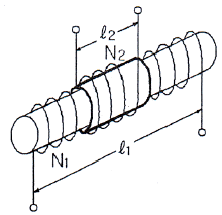
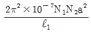
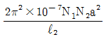
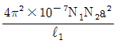
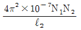
(정답률: 알수없음)
3. x＞0 인 영역에 ε1=3인 유전체, x＜0 인 영역에 ε2=5인 유전체가 있다. 유전율 ε2인 영역에서 전계 E2=2ax+30ay-40az(V/m)일 때, 유전율 ε1인 영역에서의 전계 E1(V/m)은인 영역에서의 전계 E1(V/m)은?
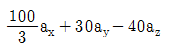
- 20ax+90ay-40az
- 100ax+10ay-40az
- 60ax+30ay-40az
(정답률: 알수없음)
4. 한 변의 길이가 50[cm]인 정삼각형의 3정점 A, B, C에 각각 20×10-8[C]의 점전하가 있을 때, A에 작용하는 힘은 몇 N인가?
- 9×109×(20×10-8)2×√3
- 9×109×(20×10-8)2×2√3
- 9×109×(20×10-8)2×4√3
- 9×109×20×10-8×4√3
(정답률: 알수없음)
5. 와전류의 방향에 대한 설명으로 옳은 것은?
- 일정하지 않다.
- 자력선의 방향과 동일하다.
- 자계와 평행되는 면을 관통한다.
- 자속에 수직되는 면을 회전한다.
(정답률: 알수없음)
6. 맥스웰 전자방정식의 설명으로 잘못된 것은?
- 폐곡선에 연한 전계의 선적분은 폐곡선 내를 통하는 자속의 시간적 변화율과 같다.
- 폐곡선에 연한 자계의 선적분은 폐곡선 내를 통하는 전류와 전속의 시간적 변화율의 합과 같다.
- 폐곡면을 통하여 나오는 전기력선은 폐곡면 내의 전하량과 같다.
- 폐곡면을 통하여 나오는 발산자속은 영이다.
(정답률: 알수없음)
7. 자유공간에 미소전류 Idyay가 원점에 있을 때, 이 미소전류에 의한 점 P(x, y, z)에서 미소 벡터 퍼텐셜(vector potential)은?
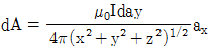
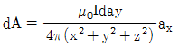
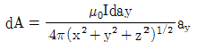
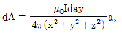
(정답률: 알수없음)
8. 자기 쌍극성의 자위에 관한 설명 중 맞는 것은?
- 쌍극자의 자기모멘트에 반비례한다.
- 거리의 제곱에 반비례한다.
- 자기 쌍극자의 축과 이루는 각도 θ의 sinθ에 비례한다.
- 자위의 단위는 Wb/J이다.
(정답률: 알수없음)
9. 그림과 같은 1m당 권선수 n, 반지름 a(m)의 무한장 솔레노이드에서 자기인덕턴스는 n과 a사이에 어떤 관계가 있는가?
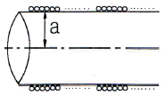
- a와는 상관없고 n2에 비례한다.
- a와 n의 곱에 비례한다.
- a2과 n2의 곱에 비례한다.
- a2에 반비례하고 n2에 비례한다.
(정답률: 알수없음)
10. 도체 내에서 성립하는 식이 아닌 것은? (단, k는 도전율, μ는 투자율이다.)
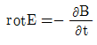
- rotB=i
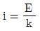
- B=μH
(정답률: 31%)
11. 진공의 전하분포 공간 내에서 전위가 V=x2+y2[V]로 표시될 때, 전하밀도는 몇 [C/m2]인가?
- -4Є0
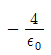
- -2Є0
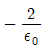
(정답률: 알수없음)
12. 공기 중에서 반지름 a(m)의 반원 코일에 λ[C/m]의 선전하가 주어졌을 때 중심의 전계의 세기는 몇 [V/m]인가?
- λ/4πЄ0a
- λ/2πЄ0a
- λ/4πЄ0a2
- λ/2πЄ0a2
(정답률: 67%)
13. 영구자석 재료로 사용하기에 적합한 특성은?
- 잔류자기와 보자력이 모두 큰 것이 적합하다.
- 잔류자기는 크고 보자력은 작은 것이 적합하다.
- 잔류자기는 작고 보자력은 큰 것이 적합하다.
- 잔류자기와 보자력이 모두 작은 것이 적합하다.
(정답률: 알수없음)
14. 대전 도체의 전계에너지는 도체 전위에 대하여 어떤 상태로 증가하는가?
- 직선
- 원형곡선
- 쌍곡선
- 포물선
(정답률: 알수없음)
15. 유전율이 ε인 유전체 내에 있는 점전하 Q에서 발산되는 전기력선의 수는 총 몇 개인가?(오류 신고가 접수된 문제입니다. 반드시 정답과 해설을 확인하시기 바랍니다.)
- Q
- Q/Є0Єs
- Q/Єs
- Q/Є0
(정답률: 알수없음)
16. 비투자율이 2500인 철심의 자속밀도가 5[Wb/m2]이고 첨심의 부피가 4×10-6[m3]일 때, 이 철심에 저장된 자기에너지는 몇 [J]인가?
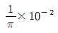
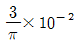
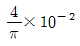
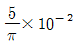
(정답률: 알수없음)
17. 길이 ℓ[m]인 동축 원통도체의 내외원통에 각각 +λ, -λ[C/m]의 전하가 분포되어 있다. 내외 원통사이에 유전율 ε인 유전체가 채워져 있을 때, 전계의 세기[V/m]는? (단, V는 내외 원통간의 전위차, D는 전속밀도이고, a, b는 내외 원통의 반지름이며 원통 중심에서의 거리 r은 a＜r＜b인 경우이다.)
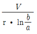
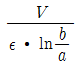
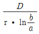
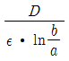
(정답률: 알수없음)
18. 다음과 같은 맥스웰의 미분형 방정식에서 의미하는 법칙은?
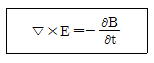
- 패러데이의 법칙
- 암페어의 주회적분법칙
- 가우스의 법칙
- 비오사바르의 법칙
(정답률: 알수없음)
19. 원통좌표계에서 자속밀도
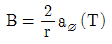
이다. 0.5 ≤ r ≤ 2.5[m]이고, 0 ≤ z ≤ 2.0[m]로 정의되는 평면을 지나는 자속의 크기는 몇 [Wb]인가?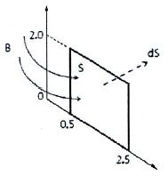
- 3.12
- 6.44
- 7.33
- 9.23
(정답률: 80%)
20. 공간전하밀도 ρ[C/m3]를 가진 점의 전압이 V[V], 전계의 세기가 E[V/m]일 때 공간 전체의 전하가 가진 에너지는 몇 [J]인가?
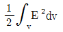
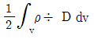
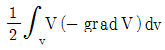
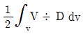
(정답률: 알수없음)
2과목: 회로이론
21. 그림과 같은 회로망 N에서 포트 2를 개방했을 때의 전압이득 G12를 임피던스 파라미터를 나타내면?
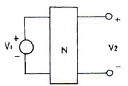
- Z21/Z11
- Z22/Z12
- Z12/Z22
- Z11/Z21
(정답률: 알수없음)
22. 교류 브리지가 평형 상태에 있을 때 L의 값은?
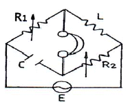
- L=R2/(R1C)
- L=CR1R2
- L=C/R1R2
- L=(R1R2)/C
(정답률: 알수없음)
23. 그림과 같은 T형 4단자 회로의 임피던스 파라미터 Z21은?
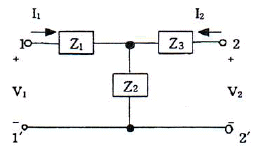
- Z1+Z2
- Z2
- -Z2
- Z2+Z3
(정답률: 알수없음)
24. 순시전류 i=2√2sin(377t-30°)[A]의 평균값은?
- 1.35[A]
- 2.7[A]
- 3.45[A]
- 5.7[A]
(정답률: 알수없음)
25.
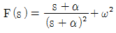
의 역 라플라스 변환은?- e-atcos ωt
- e-atsin ωt
- eatcos ωt
- eatsin ωt
(정답률: 50%)
26. ω=200[rad/s]에서 동작하는 두 개의 회로소자로 구성된 직렬회로에서 전류가 전압보다 45도 앞설 때 이 소자 중 하나는 5[Ω]인 저항이면 나머지 소자는 무엇이며, 값은?
- L, 0.1[H]
- L, 0.01[H]
- C, 0.001[F]
- C, 0.0001[F]
(정답률: 알수없음)
27. 그림의 회로망에서 Z21=V2(S)/I1(S)는?
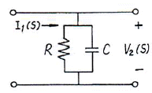
- C/(1+RS)
- CR/(1+CRS)
- 1/(1+CRS)
- R/(1+CRS)
(정답률: 64%)
28. 다음의 회로망 방정식에 대하여 S 평면에 존재하는 극점은?
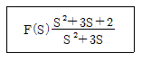
- 3, 0
- -3, 0
- 1, -3
- -1, -3
(정답률: 50%)
29. R-L 병렬회로에서, 일정하게 인가된 정현파 전류의 위상 θ에 대하여 저항에 흐르는 전류 위상 θ1과 인덕터에 흐르는 전류 위상 θ2를 나타낸 것으로 옳은 것은?
- θ＜θ1＜θ2
- θ2＜θ1＜θ
- θ2＜θ＜θ1
- θ1＜θ＜θ2
(정답률: 55%)
30. RL 직렬 회로에서 그 양단에 직류 전압 E를 연결한 다음 한참 후에 스위치 S를 개방하면 L/R 초 후의 전류는 몇 [A]인가?
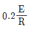
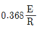
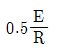
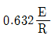
(정답률: 알수없음)
31. 다음 그림과 같은 파형의 라플라스(Laplace) 변환은?
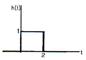
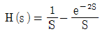
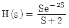
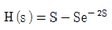
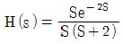
(정답률: 73%)
32. 기본파의 30[%]인 제2고조파와 20[%]인 제3고조파를 포함하는 전압의 왜형률은?
- 0.24
- 0.28
- 0.32
- 0.36
(정답률: 알수없음)
33. R=10[Ω], L=0.2[H] R-L 직렬회로에 60[Hz], 120[V] 교류 전압이 인가될 때 흐르는 전류는 약 몇 [A]인가?
- 4.7[A]
- 3.2[A]
- 2.8[A]
- 1.6[A]
(정답률: 알수없음)
34. 선형 시불변 인덕터의 자속이 ø(t) = L(t)i(t)일 때 전압 V(t)는?
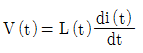
(정답률: 알수없음)
35. 다음 회로가 주파수에 무관한 정저항 회로가 되기 위한 조건은?
(정답률: 80%)
36. 그림에서 Vab를 구하면 몇 [V]인가?
- 2.5[V]
- 3.5[V]
- 5[V]
- 7[V]
(정답률: 알수없음)
37. 의 라플라스 변환은?
- a/s2-a2
- s/s2+a2
- a/s2+a2
- s/a2-a2
(정답률: 알수없음)
38. 이상적인 전류원의 내부 임피던스 Z는?
- Z=0
- Z=1[Ω]
- Z=∞
- Z는 정해지지 않는다.
(정답률: 알수없음)
39. 다음 그림과 쌍대가 되는 회로는?
(정답률: 60%)
40. 다음과 같은 결합 공진회로에서 C1과 C2를 조정하여 두 폐회로가 모두 공진 상태에 있을 때 결합계수를 변화시킨다면 i2가 최대로 되는 상태는?
- 밀결합 될 때
- 소결합 될 때
- 임계결합 될 때
- 같은 방향으로 결합 될 때
(정답률: 알수없음)
3과목: 전자회로
41. B급 푸시풀(push-pull) 증폭기의 직류 공급 전력은? (단, Vcc는 공급 전압, Im은 최대 컬렉터 전류)
- ImVcc
- 2ImVcc
(정답률: 알수없음)
42. 두 개의 입력이 일치하면 출력이 High가 되는 회로는?
- AND
- NAND
- EX-OR
- EX-NOR
(정답률: 알수없음)
43. 다음 그림 (b)와 같은 회로에서 신호저압 Vi가 그림 (a)와 같이 변화할 때 출력전압 V0로 가장 적합한 것은? (단, 다이오드 커트인 전압은 무시한다.)
(정답률: 70%)
44. 고역 3[dB] 차단 주파수가 100[kHz]이고, 전압이득이 46[dB]인 증폭기에 부궤환을 걸어서 전압이득을 20[dB] 낮추면 고역 3[dB] 차단 주파수는 몇 [kHz]인가?
- 500[kHz]
- 1000[kHz]
- 2000[kHz]
- 4000[kHz]
(정답률: 54%)
45. 다음 중 수정 진동자에 대한 설명으로 적합하지 않은 것은?
- 수정편은 압전기 현상을 가지고 있다.
- 발진 주파수는 수정편의 두께와 무관하다.
- 수정의 결정은 X, Y, Z 축을 가지고 있으며, X축을 전기 축이라고 한다.
- 수정편은 절단하는 방법에 따라 전기적 온도 특성이 달라진다.
(정답률: 알수없음)
46. 다음 중 불 공식으로 옳지 않은 것은?
- X+YZ=(X+Y)(X+Z)
- X(X+Y)=X
(정답률: 알수없음)
47. 그림과 같은 AM변조 회로는 어떤 변조 방법인가?
- 이미터 변조
- 베이스 변조
- 컬렉터 변조
- 베이스-컬렉터 변조
(정답률: 31%)
48. 증폭기의 궤환에 대한 설명 중 옳지 않은 것은?
- 부궤환을 걸어주면 전압이득은 감소하지만 대역폭이 증가하고 신호왜곡이 감소한다.
- 궤환신호(전류 또는 전압)가 출력전압에 비례할 때 전압궤환이라 한다.
- 출력전압 또는 전류에 비례하는 궤환전압이 입력신호 전압에 직렬로 연결되는 경우 직렬궤환이라 한다.
- 직렬궤환과 병렬궤환이 함께 사용된 것을 복합궤환이라 한다.
(정답률: 60%)
49. 병렬 전류 궤환 증폭기의 궤환 신호 성분은?
- 전류
- 전압
- 전력
- 저항
(정답률: 알수없음)
50. 다음 회로의 트랜지스터를 근사적인 h정수 모델로 대치했을 때 전압 이득(Vo/Vs)으로 옳은 것은?
- -hieRL/(Rs+hfe)
- -hfeRL/(Rs+hie)
- hieRL/(Rs-hfe)
- hfeRL/(Rs-hie)
(정답률: 알수없음)
51. 다음 중 고주파 전력 증폭기로 가장 적당한 것은?
- A급 증폭기
- B급 증폭기
- C급 증폭기
- AB급 증폭기
(정답률: 70%)
52. 어떤 증폭기의 개방루프 전압이득이 100이고, 왜율이 10[%]이다. 이 증폭기의 왜율을 1[%]로 하기 위한 부궤환율 β의 값은?
- 0.01
- 0.09
- 0.1
- 0.9
(정답률: 알수없음)
53. 커패시터 입력형 필터를 구성한 전파 정류기에서 부하저항이 감소하면 리플(ripple) 전압은?
- 감소한다.
- 증가한다.
- 변동이 없다.
- 주파수가 변화한다.
(정답률: 알수없음)
54. JFET에서 IDSS=12[mA], VP=-4[V]이고, VGS=-2[V]일 때 드레인 전류 ID는 몇 [mA]인가?
- 1.5[mA]
- 2.7[mA]
- 3[mA]
- 5[mA]
(정답률: 알수없음)
55. 다음 중 이상적인 연산증폭기의 특성으로 옳은 것은?
- 온도에 대한 드리프트(drift)가 큰 특성을 가진다.
- 대역폭(BW) = ∞
- 출력저항(Ro) = ∞
- 전압이득 |Av| = 0
(정답률: 50%)
56. 어떤 증폭기의 하측 3[dB] 주파수가 0.75[MHz]이고, 상측 3[dB] 주파수가 5[MHz]일 때 이 증폭기의 대역폭은?
- 4.25[MHz]
- 5[MHz]
- 7.75[MHz]
- 10[MHz]
(정답률: 알수없음)
57. 다음 그림과 같은 연산증폭기 회로의 출력전압 Vo는?
(정답률: 65%)
58. 배타적 OR(Exclusive OR)와 AND gate로만 구성되는 회로는?
- 플립플롭 회로
- 래치 회로
- 반가산기 회로
- 전가산기 회로
(정답률: 알수없음)
59. 공간 전하 용량을 변화시켜 콘덴서 역할을 하도록 설계된 다이오드는?
- 제너 다이오드
- 터널 다이오드
- Gunn 다이오드
- 바렉터 다이오드
(정답률: 75%)
60. 베이스 접지일 때 차단주파수가 12[MHz]이다. 이미터 접지일 때 차단주파수는 약 몇 [MHz]인가? (단, β=100이다.)
- 0.1[MHz]
- 0.12[MHz]
- 0.24[MHz]
- 1.2[MHz]
(정답률: 알수없음)
4과목: 물리전자공학
61. 다음 중 1[eV]의 운동에너지 값은?
- 1.6×1031[J]
- 9.1×1031[J]
- 1.6×10-19[J]
- 9.1×1019[J]
(정답률: 80%)
62. 전자가 외부의 힘(열, 빛, 전장)을 받아 핵의 구속력으로부터 벗어나 결정 내를 자유로이 이동할 수 있는 자유전자의 상태로 존재하는 에너지대는?
- 충만대(filled band)
- 금지대(forbidden band)
- 가전자대(valence band)
- 전도대(conduction band)
(정답률: 60%)
63. 이동도(mobility)에 관한 설명으로 옳지 않은 것은?
- 이동도의 단위는 [m2/Vㆍs]이다.
- 도전율이 크면 이동도도 크다.
- 온도가 증가하면 이동도는 증가한다.
- 반도체에서 전자의 이동도는 정공의 이동도보다 크다.
(정답률: 알수없음)
64. 다음 중 스위칭 시간이 대단히 짧으므로 고속 스위칭 회로에 사용되는 소자는?
- UJT
- SCR
- 제너 다이오드
- 터널 다이오드
(정답률: 알수없음)
65. 펀치-스루(punch-through) 현상에 대한 설명으로 옳지 않은 것은?
- 이미터, 베이스, 컬렉터의 단락 상태이다.
- 펀치-스루 전압은 베이스 영역 폭에 반비례한다.
- 컬렉터 역 바이어스의 증가에 의해 발생하는 현상이다.
- 펀치-스루 전압은 베이스내의 불순물 농도에 비례한다.
(정답률: 알수없음)
66. 전자 방출에 관한 설명 중 옳지 않은 것은?
- 금속을 고온으로 가영하면 자유전자의 일부가 금속외부로 방출되는 현상을 열전자 방출이라 한다.
- 금속의 표면에 빛을 입사시키면 전자가 방출되는 현상을 광전자 방출이라 한다.
- 금속의 표면에 강한 전계를 가하면 전자가 방출되는 현상을 2차 전자 방출이라 한다.
- 금속의 표면에 전계를 가하면 금속 표면의 열전자 방출량보다 전자 방출이 증가하는 현상을 Schottky 효과라 한다.
(정답률: 알수없음)
67. 균일한 정자계 B속으로 자계와 직각 방향으로 속도 V로 전자가 들어갔다. 이때 속도 V를 2배로 변경했을 때 전자의 운동은 어떻게 되겠는가?
- 원운동의 주기는 2배가 된다.
- 원운동의 각 속도는 4배가 된다.
- 원운동의 주기는 변하지 않는다.
- 원운동의 반경은 변하지 않는다.
(정답률: 알수없음)
68. 다음과 같은 원리와 관계되는 것은?
- 홀 효과(Hall effect)
- 콤프턴 효과(Compton effect)
- 쇼트키 효과(Schottky effect)
- 흑체방사(black body radiation)
(정답률: 34%)
69. Pauli의 배타율 원리를 만족하는 분포 함수는?
- Fermi-Dirac
- Bose-Einstein
- Gauss-error function
- Maxwell-Boltzmann
(정답률: 알수없음)
70. 반도체는 절대온도 0[K]에서 절연체, 상온에서 절연체와 도체의 중간적 성질을 띤다. 만일 불순물의 농도가 증가하였을 때 도전율(σ)과 고유저항(ρ)은 어떻게 되는가?
- 도전율(σ)은 감소하고 고유저항(ρ)은 증가한다.
- 도전율(σ)은 증가하고 고유저항(ρ)은 감소한다.
- 도전율(σ)과 고유저항(ρ) 모두 증가한다.
- 도전율(σ)과 고유저항(ρ) 모두 감소한다.
(정답률: 40%)
71. 열평형 상태에서 pn 접합 전류가 0이라면, 그 의미는?
- 전위장벽이 없어졌다.
- 접합을 흐르는 다수 캐리어가 없다.
- 접합을 흐르는 소수 캐리어가 없다.
- 접합을 흐르는 소수 캐리어와 다수 캐리어가 같다.
(정답률: 알수없음)
72. 홀(hall) 효과와 가장 관계가 깊은 것은?
- 자장계
- 고저항 측정기
- 전류계
- 분압계
(정답률: 알수없음)
73. 기압 1[mmHg] 정도의 글로우 방전(glow discharge)에서 생기는 관내 발광 부분이 아닌 것은?
- 양광주(positive column)
- 부 글로우(negative glow)
- 음극 글로우(cathode glow)
- 패러데이 암부(faraday dark space)
(정답률: 42%)
74. T=0[K]에서 전자가 가질 수 있는 최대에너지 준위는?
- 페르미 에너지 준위
- 도너 준위
- 억셉터 준위
- 드리프트 준위
(정답률: 알수없음)
75. 컬렉터 접합의 공간 전하층은 컬렉터 역바이어스가 증가함에 따라 넓어지며 따라서 베이스 중성영역의 폭이 줄어든다. 이러한 현상은?
- punch-through
- Early 효과
- Miller 효과
- Tunnel 효과
(정답률: 50%)
76. 페르미 준위에 대한 설명으로 옳은 것은?
- 불순물의 양과 온도가 증가할수록 금지대의 중앙으로부터 멀어진다.
- 불순물의 양과 온도가 증가할수록 진성반도체의 페르미 준위에 가까워진다.
- 불순물의 양이 증가하면 금지대의 중앙으로부터 멀어지고, 온도가 증가하면 그와 반대이다.
- 불순물의 양이 증가하면 금지대의 중앙으로 가까워지고, 온도가 증가하면 그와 반대이다.
(정답률: 46%)
77. 열전자를 방출하기 위한 재료의 조건으로 옳지 않은 것은?
- 융점이 낮아야 한다.
- 일함수가 작아야 한다.
- 방출 효율이 좋아야 한다.
- 진공 중에서 쉽게 증발되지 않아야 한다.
(정답률: 알수없음)
78. 길이 10[mm], 이동도 0.24[m2/Vㆍsec]인 N형 Si의 양단에 전압 10[V]을 가했을 때 전자의 속도는?
- 160[m/sec]
- 180[m/sec]
- 200[m/sec]
- 240[m/sec]
(정답률: 54%)
79. 25℃에서 8.2[V]인 제너 다이오드가 0.⑤[%/℃]의 온도계수를 가질 때 60℃에서의 제너 전압은?
- 8.06[V]
- 8.17[V]
- 8.34[V]
- 8.42[V]
(정답률: 알수없음)
80. 접합형 다이오드가 점접촉 다이오드보다 우수한 점으로 옳지 않은 것은?
- 잡음이 적다.
- 전류 용량이 크다.
- 충격에 강하다.
- 주파수 특성이 좋다.
(정답률: 알수없음)
5과목: 전자계산기일반
81. 다음 중 IEEE 754에 대한 설명으로 옳은 것은?
- 고정소수점 표현에 대한 국제 표준이다.
- 가수는 부호 비트와 함께 부호화-크기로 표현된다.
- 0.M×2E의 형태를 취한다. (단, M:가수, E:지수)
- 64비트 복수-정밀도 형식의 경우 지수는 10비트이다.
(정답률: 알수없음)
82. 명령 인출 사이클(fetch cycle)에 대한 설명으로 옳지 않은 것은?
- machine cycle에 속한다.
- 명령어를 해독하는 과정이 포함된다.
- 반드시 execution cycle에서만 발생한다.
- program counter에서 주소가 MAR로 전달된다.
(정답률: 알수없음)
83. 문자를 표현하기 위한 코드에 관한 설명으로 옳지 않은 것은?
- 표준 BCD 코드는 64가지의 문자를 표현할 수 있으며, zone 비트를 2개이고 digit 비트는 4개이다.
- EBCDIC code는 zone 비트와 digit 비트가 모두 4개씩이며 16진수를 표시하기에 편리하다.
- 그레이(Gray) 코드는 잘못된 정보를 체크에 의해 착오를 검출하여 다시 교정할 수 있는 코드이다.
- 에러 검출 및 교정코드의 대표적인 코드는 해밍(Hamming) 코드이다.
(정답률: 알수없음)
84. 주소지정 방식(Addressing Mode) 중 유효주소를 구하기 위해 현재 명령어의 주소부의 내용과 PC의 내용을 더하여 결정하는 방식은?
- Direct Addressing
- Indirect Addressing
- Relative Addressing
- Index Register Addressing
(정답률: 알수없음)
85. 명령의 패치(fetch) 사이클이 평균 0.3[μs], 명령 실행 사이클이 평균 0.5[μs]인 시스템에서 명령 선취에 의한 명령 실행 시간의 개선량은?
- 0.375
- 0.475
- 0.575
- 0.675
(정답률: 40%)
86. 주소지정방식(addressing mode)에서 오퍼랜드(operand) 부분에 데이터가 포함되어 실행되는 방식은?
- index addressing mode
- direct addressing mode
- indirect addressing mode
- immediate addressing mode
(정답률: 알수없음)
87. 다음 그림과 같은 명령 형식에서 나타낼 수 있은 명령어와 주소(address)의 수는?
- OP = 8, Address = 256
- OP = 16, Address = 512
- OP = 8, Address = 512
- OP = 16, Address = 256
(정답률: 알수없음)
88. 산술 시프트(Arithmetic Shift)는 부호가 있는 2진수를 시프트하는 것이다. 다음 설명 중에서 틀린 것은?
- 왼쪽 산술 시프트는 2진수에 2를 곱한 것이다.
- 오른쪽 산술 시프트는 2진수에 2로 나눈 것이다.
- 부호 비트는 시프트하지 않는다.
- 오버플로우의 발생 유무를 확인하지 않는다.
(정답률: 알수없음)
89. 다음 중 시스템소프트웨어(System Software)는?
- 문서 편집 프로그램
- 성능 측정 프로그램
- 시스템 보안 유지 프로그램
- 운영체제
(정답률: 알수없음)
90. 다음 중에서 일반적인 직렬 전송 통신 속도를 나타낼 때 사용하는 단위는?
- LPM(Line Per Minute)
- CPM(Character Per Minute)
- CPS(Character Per Second)
- BPS(Bit Per Second)
(정답률: 70%)
91. 범용 또는 특수 목적의 소프트웨어를 조합하거나 조직적으로 구성하고, 여러 가지 종류의 원시프로그램, 목적 프로그램을 분류하여 정비한 것은?
- Problem State
- PSW(Program Status Word)
- Interrupt
- Program library
(정답률: 58%)
92. 연산 장치에서 뺄셈을 계산할 때 사용하는 방법은?
- 피감수에서 감수를 직접 뺀다.
- 시프트(Shift) 방법을 이용하여 감산하다.
- 보수(Complement) 방법을 사용하여 덧셈 계산한다.
- 비트 마크(Bit mark) 방법을 사용하여 감산한다.
(정답률: 알수없음)
93. 다음 설명 중 바르지 않은 것은?
- 시스템 소프트웨어는 컴퓨터를 사용하기 위해 가장 근본적으로 필요한 소프트웨어이다.
- 기계어로 번역되지 이전의 프로그램을 원시프로그램이라고 한다.
- 어셈블리어는 이진수를 사용하여 작성한 프로그램이다.
- 컴퓨터에 사용하는 목적에 따라서 실제로 그 일을 시키기 위한 프로그램을 응용 소프트웨어라 한다.
(정답률: 46%)
94. 16비트 마이크로프로세서 내에서 CPU와 외부 데이터버스 사이에 명령을 리드하여 데이터의 송수신을 제어하는 것은 무엇인가?
- Bus Interface Unit
- Execution Unit
- I/O port
- Address Bus
(정답률: 알수없음)
95. 다음 중 두 문자의 비교(compare)에 가장 적합한 논리 연산은?
- AND
- EX-OR
- OR
- NOR
(정답률: 알수없음)
96. 명령어 사이클(instruction cycle) 중에서 프로그램 카운터(program counter) 값이 증가되는 것은?
- fetch cycle
- interrupt cycle
- execute cycle
- indirect cycle
(정답률: 알수없음)
97. 수평형 제어 방식의 설명 중 옳지 않은 것은?
- 성능의 향상을 꾀한다.
- 주로 소형 계산기에서 채택하는 제어방식이다.
- 하나의 비트가 한 개의 마이크로 동작에 대응한다.
- 제어 워드가 크므로 넓은 메모리 공간이 필요하다.
(정답률: 알수없음)
98. 입출력 장치의 동작 속도와 전자계산기 내부의 동작 속도를 맞추기 위해 사용되는 레지스터는 무엇인가?
- 어드레스 레지스터
- 시퀀스 레지스터
- 버퍼 레지스터
- 시프트 레지스터
(정답률: 알수없음)
99. 프로그래밍 언어의 종류 중 객체 지향 프로그래밍 언어는?
- FORTRAN
- BASIC
- 어셈블리어
- JAVA
(정답률: 70%)
100. 다음 회로에서 A=1101, B=0111이 입력되어 있을 때 그 출력은?
- 0101
- 1010
- 0110
- 1100
(정답률: 알수없음)
Z = sqrt(μ/ε) * ln(b/a) Ω
따라서, 보기 중에서 정답은 "" 이다. 이유는 이 식에서 ln(b/a)는 도체 사이의 거리에 비례하므로, 도체 사이의 거리가 멀어질수록 특성임피던스가 증가하기 때문이다.